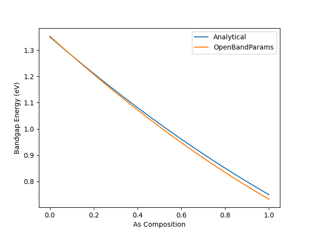

Plot InGaAsP lattice matched InP¶
Source:
#
# Copyright (c) 2013-2014, Scott J Maddox
# Copyright (c) 2025, Duarte Silva
#
# This file is part of openbandparams.
#
# openbandparams is free software: you can redistribute it and/or modify
# it under the terms of the GNU Affero General Public License as published
# by the Free Software Foundation, either version 3 of the License, or
# (at your option) any later version.
#
# openbandparams is distributed in the hope that it will be useful,
# but WITHOUT ANY WARRANTY; without even the implied warranty of
# MERCHANTABILITY or FITNESS FOR A PARTICULAR PURPOSE. See the
# GNU Affero General Public License for more details.
#
# You should have received a copy of the GNU Affero General Public License
# along with openbandparams. If not, see <http://www.gnu.org/licenses/>.
#
#############################################################################
import sys
import os
sys.path.insert(0,
os.path.abspath(os.path.join(os.path.dirname(__file__), '../..')))
import openbandparams as obp
import numpy as np
from matplotlib import pyplot as plt
x=np.linspace(0,1,50)
Eg = 1.35-0.72*x+0.12*x**2
Eg_obp = []
for xi in x:
mat = obp.GaInPAs(As = xi, a=obp.InP.a())
Eg_obp.append(mat.Eg())
fig = plt.figure()
ax = fig.add_subplot(111)
ax.plot(x, Eg, label='Analytical')
ax.plot(x, Eg_obp, label='OpenBandParams')
ax.set_xlabel('As Composition')
ax.set_ylabel('Bandgap Energy (eV)')
ax.legend()
if __name__ == '__main__':
import sys
if len(sys.argv) > 1:
output_filename = sys.argv[1]
plt.savefig(output_filename)
else:
plt.show()
Result:
